R/config.R, 01, 02) re-points at the full
multimodal section via XENIUM_DATASET=big.gene_panel.json + cell_feature_matrix.h5; confirm immune/B-cell & plasma markers; enumerate control features.01_load_qc.R) — lean LoadXenium (centroids only); Xenium-specific QC from cells.parquet: flag (not filter) negative-control / blank-codeword / segmentation-merge cells; remove only zero-count cells.02_cluster_annotate.R) — LogNormalize (all panel genes as features), PCA/UMAP, native igraph Leiden, marker DE, provisional marker-score annotation.Targeted low-plex assay: per-cell counts are inherently low, so no scRNA-style count hard-filter is applied. QC targets control-probe / blank-codeword rates and segmentation quality instead.
| metric | value |
|---|---|
| dataset | cln_cosmx |
| platform | cosmx |
| n_cells_loaded | 532392 |
| n_cells_kept | 532392 |
| median_counts | 168 |
| median_genes | 104 |
| mean_neg_frac | 0.2852312 |
| mean_blank_frac | NA |
| median_cell_area | 4375 |
| n_flag_neg | 34115 |
| n_flag_blank | 0 |
| n_flag_seg_merge | 38 |
| n_flag_lowq | 10 |
| n_samples | 14 |
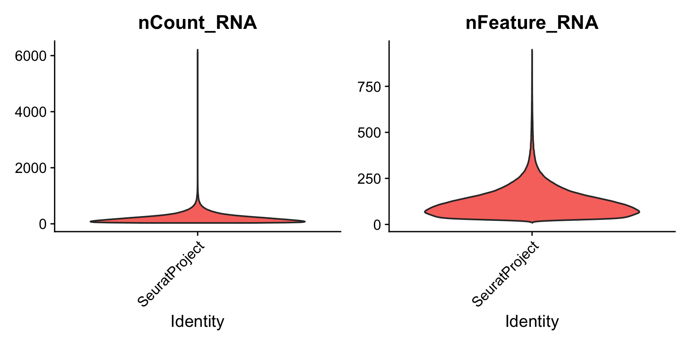
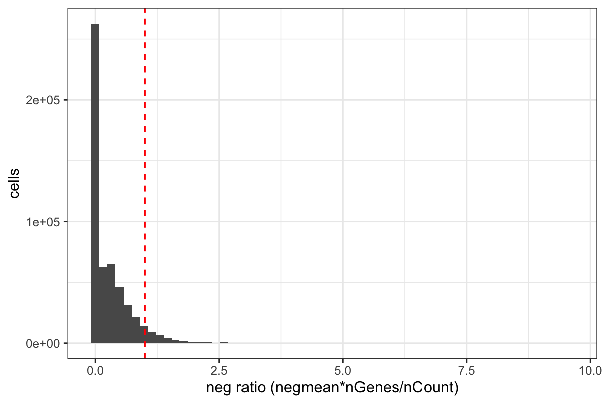
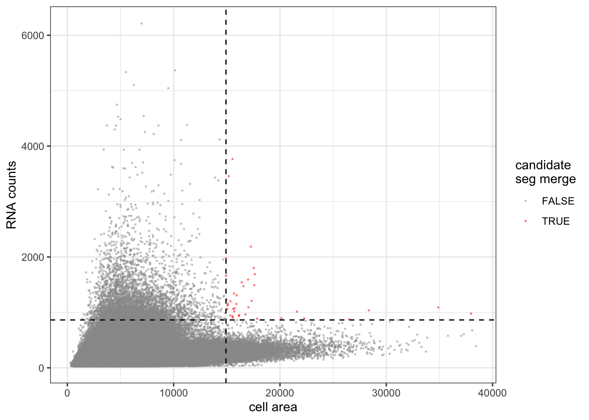
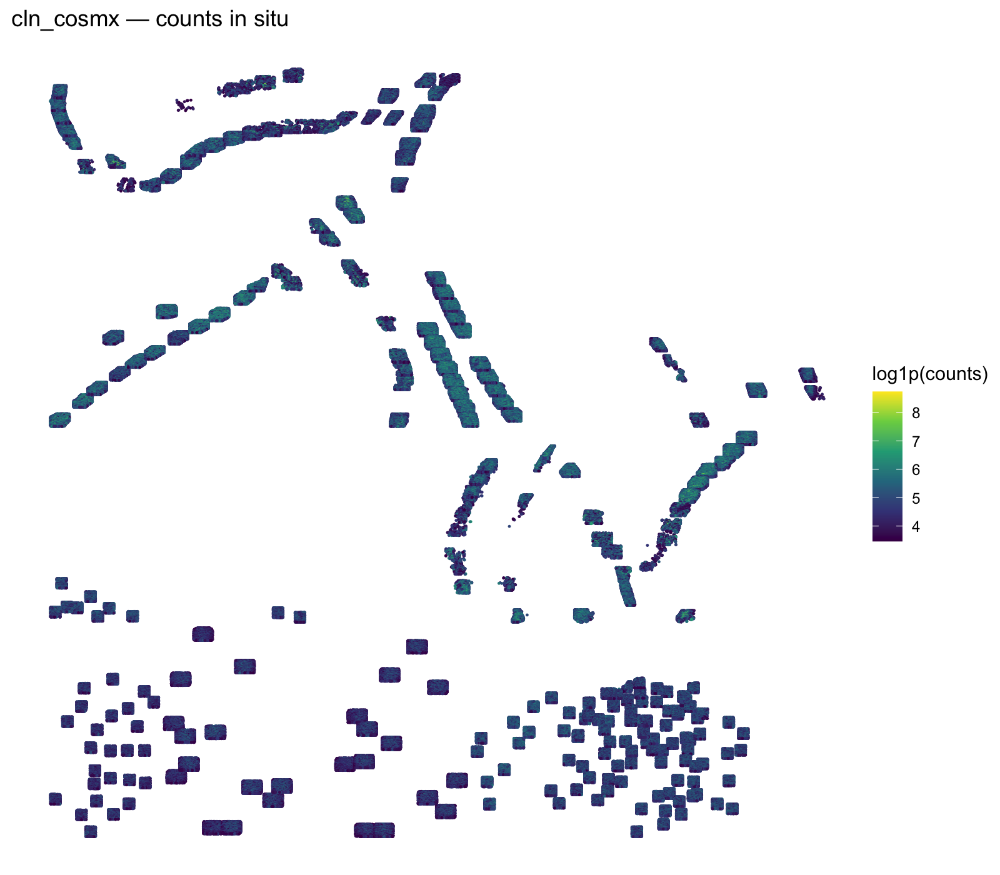
22 Leiden clusters (resolution 0.8, igraph modularity; sub-threshold clusters merged so there are no singletons). Cell-type labels below are provisional — a z-scored marker-set argmax, pending reference-based label transfer.
| cluster | provisional_type | n_cells | top_markers (avg_log2FC) |
|---|---|---|---|
| 1 | T_cell | 8.97e+04 | CD3E, NPPC, AZU1, COL9A2, WIF1 |
| 2 | Distal_tubule | 5.28e+04 | CALB1, KRT19, AQP3, CDH1, GATA3 |
| 3 | Tumor_RCC | 5.22e+04 | CRYAB, GPX3, IL17RB, PIGR, CXCL14 |
| 4 | Loop_of_Henle_TAL | 4.33e+04 | EGF, S100A2, CD24, SPP1, MECOM |
| 5 | Endothelial | 4.14e+04 | PECAM1, KDR, FLT1, KLF2, IGFBP5 |
| 6 | pDC | 3.31e+04 | RAD51, CENPF, TNFRSF13B, MMP10, SERPINB5 |
| 7 | Stroma_mural | 2.95e+04 | CCL2, COL3A1, THBS1, COL1A1, C11orf96 |
| 8 | Tumor_RCC | 2.94e+04 | GPX3, SERPINA1, DDC, CXCL14, CRYAB |
| 9 | Tumor_RCC | 2.2e+04 | PTGDS, SPOCK2, PLA2R1, ITGA3, VEGFA |
| 10 | Myeloid | 1.96e+04 | IGKC, C1QC, IGHG2, CD163, IGHG1 |
| 11 | Endothelial | 1.81e+04 | IL1RL1, IGFBP5, FGF1, KDR, PDGFRB |
| 12 | Tumor_RCC | 1.76e+04 | BATF3, ACKR3, CSF1R, CLEC4A, IL7R |
| 13 | Stroma_mural | 1.52e+04 | COL3A1, COL1A1, C1QC, COL1A2, LUM |
| 14 | Myeloid | 1.39e+04 | IL1RL1, FABP4, PDGFRB, FN1, SRGN |
| 15 | Loop_of_Henle_TAL | 1.22e+04 | CSF2, ADGRE1, ADGRD1, KRT4, CLEC5A |
| 16 | Stroma_mural | 1.08e+04 | MYH11, RGS5, SPARCL1, ACTA2, C11orf96 |
| 17 | Loop_of_Henle_TAL | 9.67e+03 | TNFRSF17, KRT13, PSCA, LAIR1, MPO |
| 18 | Tumor_RCC | 8.33e+03 | BATF3, CSF1R, CLEC4A, ANGPT2, RSPO1 |
| 19 | Plasma | 8.24e+03 | RAD51, CENPF, TNFRSF13B, MMP10, PDCD1 |
| 20 | Loop_of_Henle_TAL | 2.27e+03 | TNFRSF17, KRT13, PSCA, TNFRSF9, CCRL2 |
| 21 | Distal_tubule | 1.88e+03 | BATF3, CALB1, CLEC4A, CSF1R, ANGPT2 |
| 22 | pDC | 1.34e+03 | TCL1A, ADGRF1, CTSW, ADGRG6, S100P |
| cell_type | Freq |
|---|---|
| Distal_tubule | 5.47e+04 |
| Endothelial | 5.94e+04 |
| Loop_of_Henle_TAL | 6.75e+04 |
| Myeloid | 3.35e+04 |
| pDC | 3.44e+04 |
| Plasma | 8.24e+03 |
| Stroma_mural | 5.54e+04 |
| T_cell | 8.97e+04 |
| Tumor_RCC | 1.29e+05 |
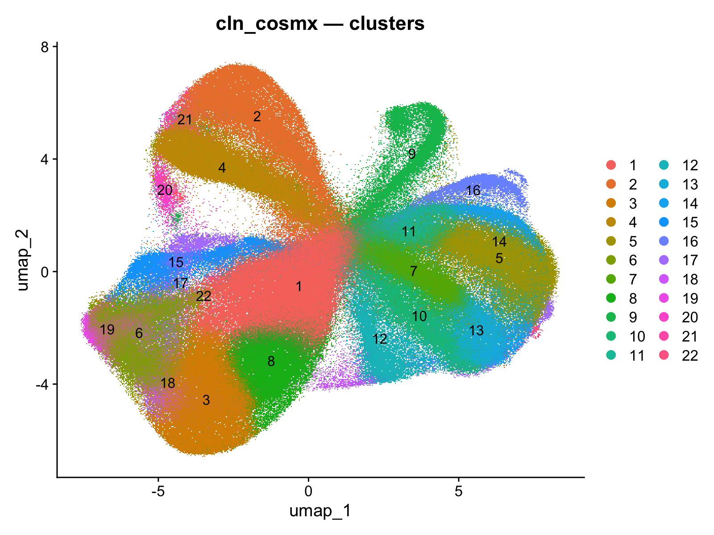
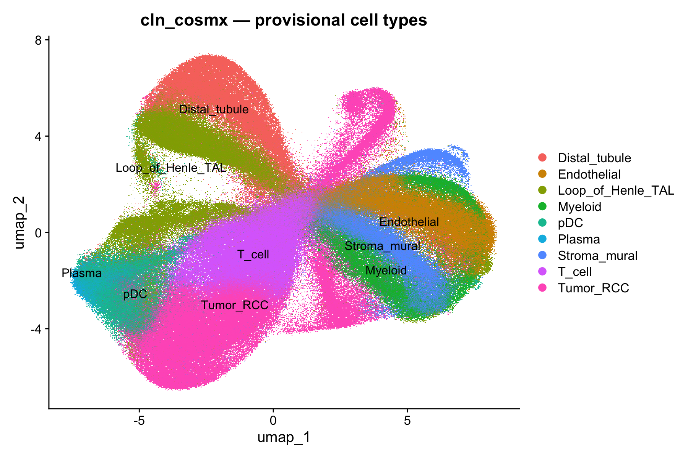
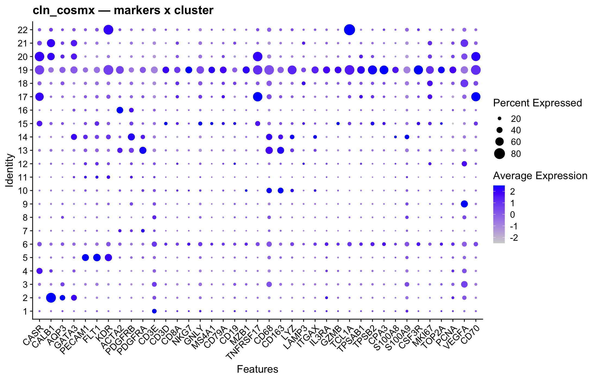
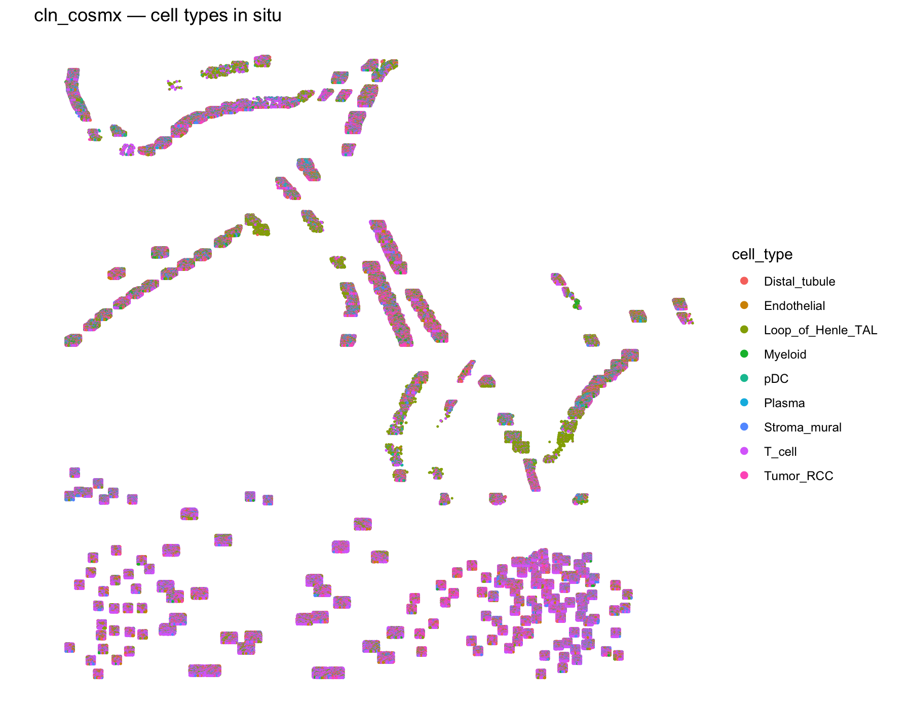
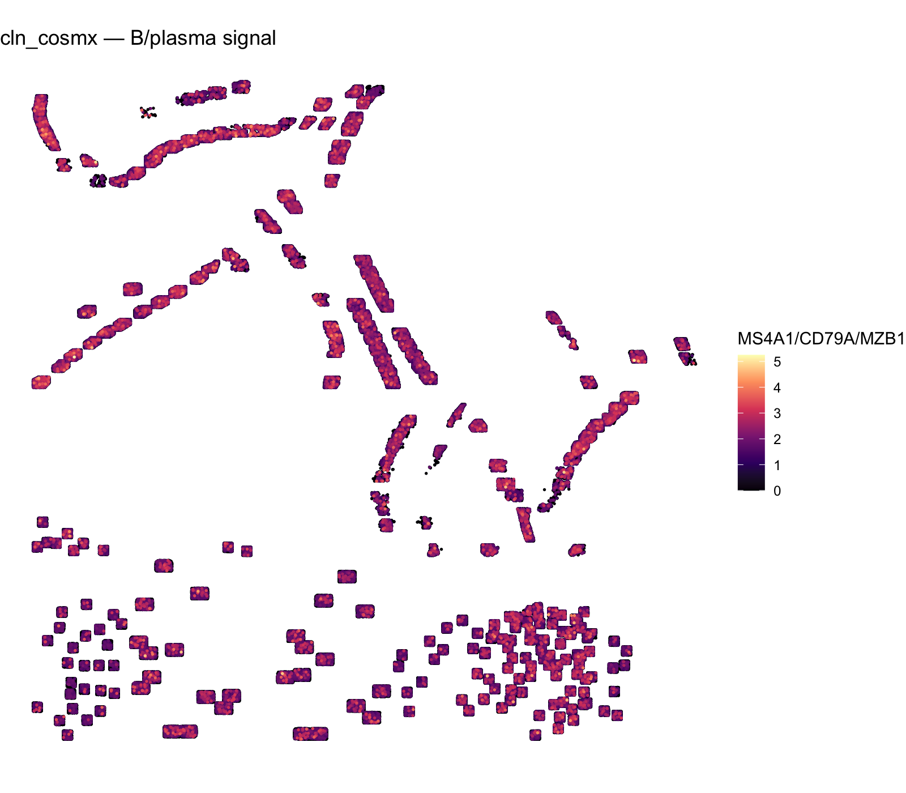
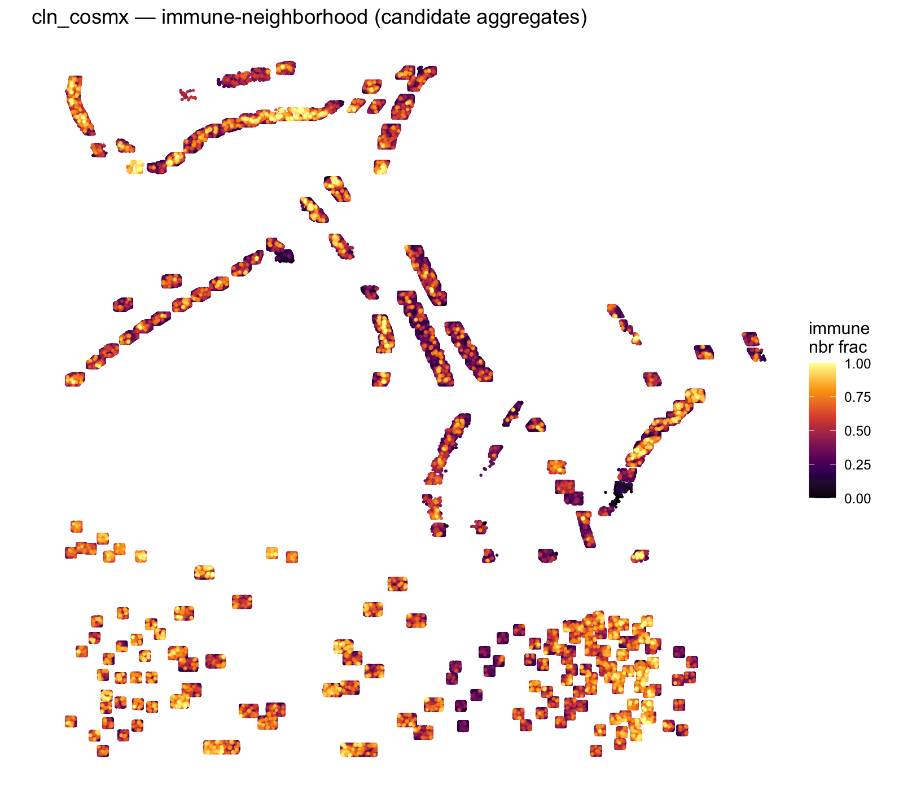
Two reference layers are applied on top of the Leiden clusters and reconciled by per-cluster majority consensus: an immune layer (SingleR vs the celldex Monaco immune reference) and a kidney/epithelial layer (Azimuth mapping onto the KPMP/HuBMAP human-kidney reference). Flagged conflicts are then resolved by a marker lineage gate (below). Tumour, LowQ and Mast keep their marker labels. Provisional pending review.
| cluster | marker_type | singler_main | singler_fine | fine_agreement | concordant | adopted | ref_cell_type |
|---|---|---|---|---|---|---|---|
| 1 | T_cell | CD4+ T cells | Low-density neutrophils | 0.125 | FALSE | FALSE | T_cell |
| 2 | Distal_tubule | Progenitors | Progenitor cells | 0.251 | FALSE | FALSE | Distal_tubule |
| 3 | Tumor_RCC | CD4+ T cells | Progenitor cells | 0.201 | FALSE | FALSE | Tumor_RCC |
| 4 | Loop_of_Henle_TAL | Progenitors | Progenitor cells | 0.219 | FALSE | FALSE | Loop_of_Henle_TAL |
| 5 | Endothelial | Monocytes | Progenitor cells | 0.152 | FALSE | FALSE | Endothelial |
| 6 | pDC | B cells | Low-density basophils | 0.134 | FALSE | FALSE | pDC |
| 7 | Stroma_mural | Monocytes | Naive CD8 T cells | 0.127 | FALSE | FALSE | Stroma_mural |
| 8 | Tumor_RCC | CD4+ T cells | Progenitor cells | 0.151 | FALSE | FALSE | Tumor_RCC |
| 9 | Tumor_RCC | CD4+ T cells | Plasmacytoid dendritic cells | 0.118 | FALSE | FALSE | Tumor_RCC |
| 10 | Myeloid | Monocytes | Intermediate monocytes | 0.2 | TRUE | TRUE | Intermediate monocytes |
| 11 | Endothelial | Dendritic cells | Progenitor cells | 0.114 | FALSE | FALSE | Endothelial |
| 12 | Tumor_RCC | Monocytes | Myeloid dendritic cells | 0.212 | FALSE | FALSE | Tumor_RCC |
| 13 | Stroma_mural | Monocytes | Non classical monocytes | 0.245 | FALSE | FALSE | Stroma_mural |
| 14 | Myeloid | Monocytes | Non classical monocytes | 0.164 | TRUE | TRUE | Non classical monocytes |
| 15 | Loop_of_Henle_TAL | Monocytes | Progenitor cells | 0.149 | FALSE | FALSE | Loop_of_Henle_TAL |
| 16 | Stroma_mural | CD8+ T cells | Naive CD8 T cells | 0.214 | FALSE | FALSE | Stroma_mural |
| 17 | Loop_of_Henle_TAL | Progenitors | Progenitor cells | 0.279 | FALSE | FALSE | Loop_of_Henle_TAL |
| 18 | Tumor_RCC | Dendritic cells | Myeloid dendritic cells | 0.187 | FALSE | FALSE | Tumor_RCC |
| 19 | Plasma | Basophils | Low-density basophils | 0.167 | FALSE | FALSE | Plasma |
| 20 | Loop_of_Henle_TAL | Progenitors | Progenitor cells | 0.468 | FALSE | FALSE | Loop_of_Henle_TAL |
| 21 | Distal_tubule | Dendritic cells | Myeloid dendritic cells | 0.24 | FALSE | FALSE | Distal_tubule |
| 22 | pDC | Monocytes | Low-density basophils | 0.127 | FALSE | FALSE | pDC |
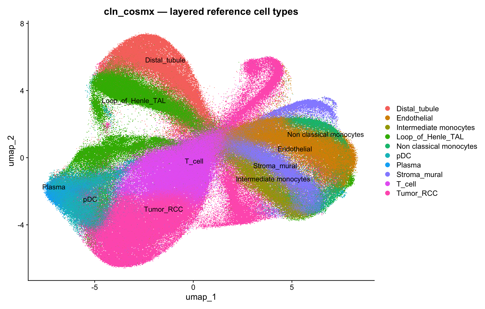
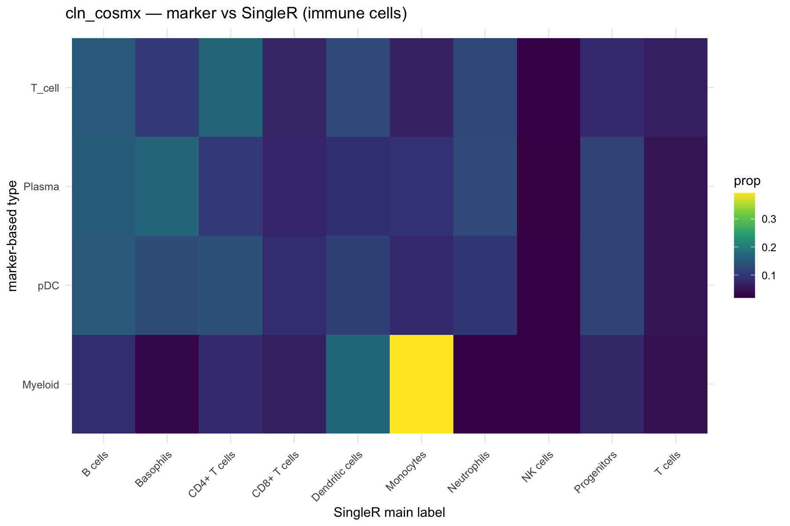
| cluster | marker_type | immune_label | kidney_l1 | conflict_type | cd3_pct | ptprc_pct | resolution_basis | protein_concordant | resolved | flag_review | final_ref_cell_type |
|---|---|---|---|---|---|---|---|---|---|---|---|
| 1 | T_cell | Low-density neutrophils | Immune | none | 0.342 | 0.042 | NA | NA | FALSE | FALSE | Low-density neutrophils |
| 2 | Distal_tubule | Connecting Tubule | Connecting Tubule | none | 0.297 | 0.07 | NA | NA | FALSE | FALSE | Connecting Tubule |
| 3 | Tumor_RCC | Tumor_RCC | Immune | none | 0.426 | 0.081 | NA | NA | FALSE | FALSE | Tumor_RCC |
| 4 | Loop_of_Henle_TAL | Loop_of_Henle_TAL | Distal Convoluted Tubule | none | 0.267 | 0.056 | NA | NA | FALSE | FALSE | Loop_of_Henle_TAL |
| 5 | Endothelial | Endothelial | Endothelial | none | 0.237 | 0.062 | NA | NA | FALSE | FALSE | Endothelial |
| 6 | pDC | Low-density basophils | Immune | none | 0.518 | 0.159 | NA | NA | FALSE | FALSE | Low-density basophils |
| 7 | Stroma_mural | Fibroblast | Fibroblast | none | 0.159 | 0.029 | NA | NA | FALSE | FALSE | Fibroblast |
| 8 | Tumor_RCC | Tumor_RCC | Immune | none | 0.299 | 0.037 | NA | NA | FALSE | FALSE | Tumor_RCC |
| 9 | Tumor_RCC | Podocyte | Podocyte | none | 0.247 | 0.049 | NA | NA | FALSE | FALSE | Podocyte |
| 10 | Myeloid | Intermediate monocytes | Immune | none | 0.233 | 0.146 | NA | NA | FALSE | FALSE | Intermediate monocytes |
| 11 | Endothelial | Endothelial | Endothelial | none | 0.12 | 0.018 | NA | NA | FALSE | FALSE | Endothelial |
| 12 | Tumor_RCC | Tumor_RCC | Immune | none | 0.281 | 0.048 | NA | NA | FALSE | FALSE | Tumor_RCC |
| 13 | Stroma_mural | Fibroblast | Fibroblast | none | 0.317 | 0.16 | NA | NA | FALSE | FALSE | Fibroblast |
| 14 | Myeloid | Myeloid | Endothelial | none | 0.251 | 0.154 | NA | NA | FALSE | FALSE | Myeloid |
| 15 | Loop_of_Henle_TAL | Progenitor cells | Immune | none | 0.348 | 0.109 | NA | NA | FALSE | FALSE | Progenitor cells |
| 16 | Stroma_mural | Vascular Smooth Muscle / Pericyte | Vascular Smooth Muscle / Pericyte | none | 0.195 | 0.037 | NA | NA | FALSE | FALSE | Vascular Smooth Muscle / Pericyte |
| 17 | Loop_of_Henle_TAL | Progenitor cells | Immune | none | 0.29 | 0.154 | NA | NA | FALSE | FALSE | Progenitor cells |
| 18 | Tumor_RCC | Myeloid dendritic cells | Immune | none | 0.426 | 0.117 | NA | NA | FALSE | FALSE | Myeloid dendritic cells |
| 19 | Plasma | Low-density basophils | Immune | none | 0.798 | 0.503 | NA | NA | FALSE | FALSE | Low-density basophils |
| 20 | Loop_of_Henle_TAL | Loop_of_Henle_TAL | Immune | none | 0.301 | 0.163 | NA | NA | FALSE | FALSE | Loop_of_Henle_TAL |
| 21 | Distal_tubule | Distal_tubule | Endothelial | none | 0.353 | 0.084 | NA | NA | FALSE | FALSE | Distal_tubule |
| 22 | pDC | pDC | Immune | none | 0.299 | 0.086 | NA | NA | FALSE | FALSE | pDC |
| final_ref_cell_type | Freq |
|---|---|
| Tumor_RCC | 9.91e+04 |
| Low-density neutrophils | 8.97e+04 |
| Endothelial | 5.94e+04 |
| Connecting Tubule | 5.28e+04 |
| Loop_of_Henle_TAL | 4.56e+04 |
| Fibroblast | 4.47e+04 |
| Low-density basophils | 4.13e+04 |
| Podocyte | 2.2e+04 |
| Progenitor cells | 2.19e+04 |
| Intermediate monocytes | 1.96e+04 |
| Myeloid | 1.39e+04 |
| Vascular Smooth Muscle / Pericyte | 1.08e+04 |
| Myeloid dendritic cells | 8.33e+03 |
| Distal_tubule | 1.88e+03 |
| pDC | 1.34e+03 |
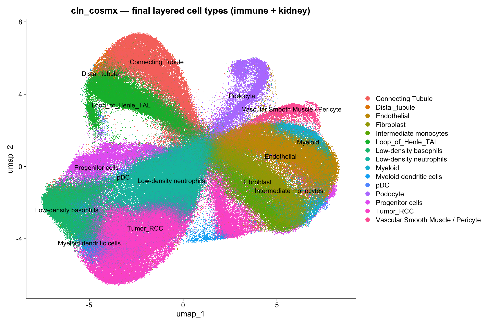
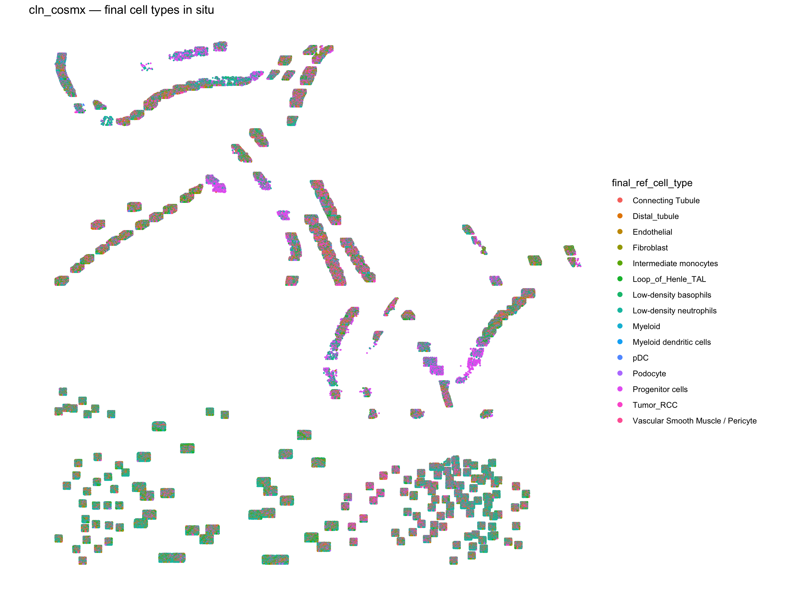
The engine, developed on 10x Xenium kidney, is scored here on the NanoString CosMx childhood-lupus-nephritis cohort against the authors' independent annotation, mapped to a common coarse lineage set. Three labelings are compared:
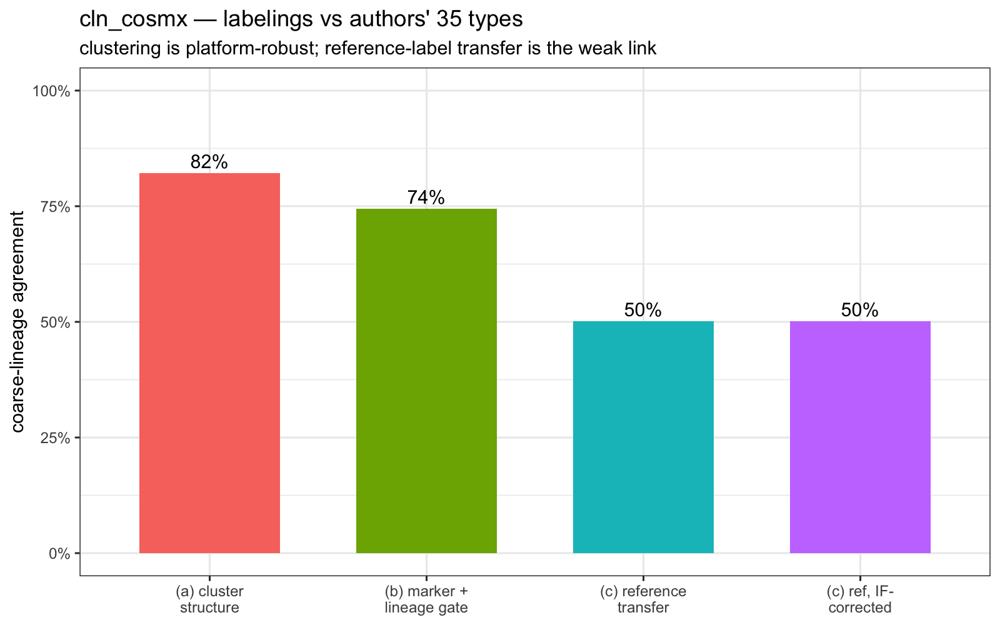
| immune_type | n_author | n_ours_b | recall_b |
|---|---|---|---|
| B | 1.27e+03 | 0 | 0 |
| Plasma | 1.73e+03 | 8.24e+03 | 0.001 |
| T_CD4 | 1.38e+03 | 0 | 0 |
| T_CD8 | 572 | 0 | 0 |
| Myeloid | 1.08e+04 | 3.35e+04 | 0.985 |
| DC | 744 | 0 | 0 |
| pDC | 47 | 3.44e+04 | 0.188 |
| Mast | 184 | 0 | 0 |
| NK | 283 | 0 | 0 |
XENIUM_DATASET=big) adds the 27-plex protein and is loaded via the manual h5
path that handles the panel's Deprecated Codeword features.